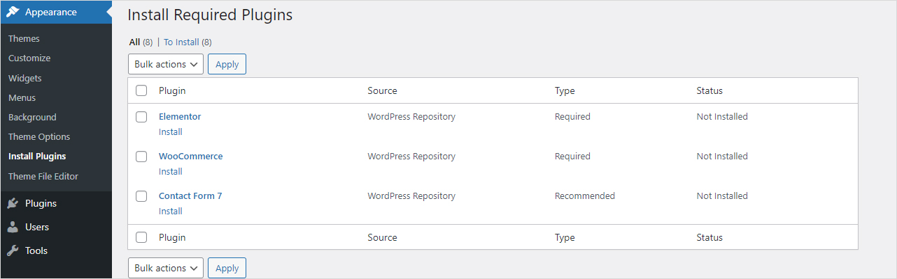

Introduction
- Theme Version: 1.0.0
- Created: 06 Mar 2024
- Latest update: 06 Mar 2024
Thank you for purchasing our theme. In this document, we provide all kinds of good information with all the details you need to use our theme. We hope you have fun and enjoy working with our theme. If you need more help, please feel free to open a ticket on our support center.
Before Getting Started
If you are not familiar with WordPress, please get accustomed with it before proceeding to using our theme. Here are some links that will help you to become more confident with WordPress:
- First Steps with WordPress: https://wordpress.org/support/article/first-steps-with-wordpress-classic/
- WordPress Optimization: https://wordpress.org/support/article/optimization/
- We recommend that you should use CDN if you sell products on many countries
Requirements & Compatibility
Requirements
To run WordPress your host just needs a couple of things:
- PHP version 7.4 or greater
- MySQL version 5.7 or greater
Compatibility
Our theme is compatible with the following browsers:
- Chrome
- Firefox
- Safari
- Microsoft Edge
Installation
WordPress Core
You download and install WordPress version 6.0 or later
Theme Package
To download, you need to log into your ThemeForest account and go to your http://themeforest.net/downloads page. Locate the theme that you purchased in your Downloads list and click on the Download button
- All files & documentation: contains documentation, licenses, theme package and child theme package. So if you select this option, you need to extract the downloaded package and install the theme package inside.
- Installation WordPress file only: contains only the theme package
- License certificate & purchase code (PDF): contains your license information in a PDF file
- License certificate & purchase code (text): contains your license information in a text file
WordPress Installation
Follow the steps below to install via WordPress:
- In your WordPress Admin Panel, go to Appearance > Themes
- Click on the Add New and Upload Theme buttons
- Click on the Choose File button and navigate to find the ecomall.zip file on your computer and click on the Install Now button
- Wait while the theme is uploaded and installed
- Activate the newly installed theme
- Then you will get a notification about installing the required plugins. Follow the steps to install and activate the plugins

- Some hostings have a restriction on a size of a file that you are uploading. If you have any warning, you will contact your hosting provider. They should increase your maximum upload size. Or you can refer this article and try doing it by yourself.
- If you get the error message: "The package could not be installed. The theme is missing the style.css stylesheet.", it means that you didn't upload the theme package. You will need to extract your package and install the ecomall.zip file inside.
FTP Installation
Follow the steps below to install via FTP:
- Log into your hosting space via a FTP software
- Unzip the ecomall.zip file and ONLY use the extracted ecomall folder
- Upload the extracted ecomall folder into wp-content > themes folder
- Go to Appearance > Themes and activate the Ecomall theme
- Then you will get a notification about installing the required plugins. Follow the steps to install and activate the plugins
Required Plugins
After activating the theme, you will get a notification about installing the required plugins. You go to Appearance > Install Plugins to install them.
- You don't directly purchase the Revolution Slider plugin. So you can not update it by yourself. It is also not recommended. When it has a new version, we will be careful to test and release the new theme version.
- You should also not update other plugins without updating the theme. Please see our changelog to make sure that the current theme version is compatible with the new plugin version.
Demo Content
Our theme includes the demo data to the One Click Demo Import plugin. In admin panel, you go to Appearance > Ecomall Importer (You have to install and activate the ThemeSky and One Click Demo Import plugins to see this menu item). Then you click on the Import Demo Data button and the Continue & Import button (without selecting any recommended plugin from One Click Demo Import). It will take a few minutes to complete!
Please note that if you have any problem with import, please read this article https://ocdi.com/import-issues/ and check your hosting configuration, or contact us here https://skygroup.ticksy.com/
Updating The Theme
Manual Update
Follow the steps below to manually update the theme:
- First, you download the new theme package from themeforest. You have to log into your themeforest account and navigate to the Downloads tab. You find the Ecomall theme in your purchased themes list.
- You delete the current theme. Don't worry about this. Your data won't be lost.
- You upload the new theme package via WordPress or FTP software.
Automatic Update
You update the theme through the Envato Market plugin. Follow the steps below to set up this plugin:
- Download and install the Envato Market plugin
- You go to here https://build.envato.com/create-token/ and create a token. Get it.
- In WordPress admin panel, you find the section called Envato Market. You enter your token code in there.
Please read this tutorial https://skygroup.ticksy.com/article/15704 to get more information.
- If you translated the theme to another language, you should backup your translation files in the themes > ecomall > languages folder before updating. You should also backup the translation files in plugins.
- After updating the theme, you should update the recommended plugins if there is a notification about updating plugins. You go to Appearance > Install Plugins to update plugins. If you can not update the recommended plugins in wp admin, you should manually update them. You can find the plugin packages in the theme folder > framework > plugins folder.
- You can not update the Revolution Slider plugin in Appearance > Install Plugins because it is a premium plugin. To update it, you need to deactivate and delete it first. Then, you go to Appearance > Install Plugins and install it again.
Theme Options
After activating our theme, you can go to Appearance > Theme Options to configure the theme. Below will explain what you can do with Theme Options.
- General: Add your logo and some global options
- Color Scheme: manage your site color
- Typography: you can change font and font size in there
- Header: set up the Header Layout, breadcrumb and other options for header
- Footer: select Footer Blocks which you want to show
- Menu: some options for menu
- Blog: configure the Blog Layout and some options to Show/Hide some things on the blog page
- WooCommerce: some global WooCommerce options, such as Product label, Quickshop, Ajax search
- Shop/Product Category: you configure your Shop/Product Category page in there
- Product Details: you configure your Product page in there
- Custom Code: allow you to add custom css/js code
- Import/Export: backup or restore your theme options
Filter Widget Area
This widget area allows you to add the filter widgets into the Shop/Category page as the screenshot.
You go to Appearance > Widgets. You drag and drop the filter widgets into Filter Widget Area.
If you want to hide this section, you can disable the Filter Widget Area option in Theme Options > Shop/Product Category tab.
Header
The header is probably one of the first thing that you will want to setup. It includes the logo, favicon, menu and other things. The following sections will explain how to set up and customize header.
Adding The Logo & Favicon
Follow the steps below to set up the logo & favicon:
- Navigate to Appearance > Theme Options. You select the General tab
- Find the logo and favicon options
- Click on the Upload button and choose a file from your library
Setting Up Header
To set up your header, you go to Appearance > Theme Options > Header tab. In there, you can choose Header Layout, configure your breadcrumb and other options.
Header Layout
Ecomall comes with 6 different header layouts. Just choose one of our header layouts for your site.
You can also choose the header layout for individual pages (see Page Options).
Breadcrumb
Ecomall comes with 3 different breadcrumb layouts. Just choose one of our breadcrumb layouts for your site.
You can also choose the breadcrumb layout for individual pages (see Page Options).
Other Options
- Header Notice: add notice or information to header
- Sticky Header: Show header when scrolling down
- Search: Show the search bar
- Wishlist: Show the wishlist icon/link
- Header Currency: Show multi-currency switcher
- Header Language: Show multi-language switcher
- My Account: Show the login form/my account link
- Shopping Cart: Show cart on header
- Shopping Cart Sidebar: Show cart in a sidebar when clicking on cart
- Add To Cart Effect: Show a popup or image flies to cart after adding a product to cart
- Today's Deal: Add a link to header
- Hotline: Add phone nunber to header
- Header Social Icons: Add social icons to header
Header Customization
If you want to customize the theme, you should create the child theme before making any changes.
You can find the sample child theme package (the ecomall-child.zip file) in your downloaded file (you have to download All files & documentation).
Follow the steps below to override header template:
- Create the templates > headers folders in the child theme folder
- Copy the template file from the parent theme folder to the child theme folder
- Edit the template file in the child theme folder
Pages
Ecomall is built based on the Elementor plugin and powerful Page Options which help you build any kinds of pages. The following sections will explain how to create a new page.
Create A New Page
Follow the steps below to create a new page:
- In admin panel, go to Pages and click on the Add New button
- Input the page title and page content
- On the Page Attributes section, choose the page template from dropdown list
- Scroll down and find the Page Options section, make some configurations for your page
Page Options
In the page editor (You Edit Page, not Edit with Elementor), you will see the Page Options section at the bottom of editor. It will help you create many kinds of pages.
After changing Page Options, you can switch to Elementor and continue editing page content.
Some options will override the options in Theme Options. Select Default if you want to use your global settings.
- Layout Fullwidth: enable Fullwidth for your page layout. You can set Fullwidth for the whole page or part of page (Header, Main Content, Footer)
- Layout Style: select Boxed or Wide layout
- Page Layout: select Fullwidth, Left Sidebar, Right Sidebar or Left & Right Sidebar
- Left Sidebar: select a sidebar to display on the left sidebar
- Right Sidebar: select a sidebar to display on the right sidebar
- Header Layout: select one of Header Layouts
- Transparent Header: set header background to transparent. Only available on some header layouts
- Header Text Color: set text color when enabling Transparent Header
- Primary Menu: select a different primary menu for this page
- Display Vertical Menu By Default: show vertical menu without hovering
- Show Page Title: show or hide the page title. The page title is hidden on home page by default
- Show Breadcrumb: show or hide the breadcrumb. It is also hidden on home page by default
- Breadcrumb Layout: select a layout for your breadcrumb
- Breadcrumb Background Parallax: allow you to apply parallax in the breadcrumb background
- Breadcrumb Background Image: change the breadcrumb background image for this page
- Logo: allow you to display a different logo on this page
- Mobile Logo: show this logo on mobile. Use Logo if it is not set
- Sticky Logo: show this logo on the sticky header. Use Logo if it is not set
- Page Slider: allow you to add a slider on your page
- Page Slider Position: set Position for your slider (Before Header or Before Main Content)
- Select Revolution Slider: if you set Page Slider to Revolution Slider, you will select a slider to display
- Footer Block: select a footer block to replace the footer block which is selected in Theme Options
Home Pages
Setting up a home page
- In admin panel, you go to Settings > Reading.
- You choose the A static page(select below) option.
- Select a page from dropdown list of the Homepage option.
Blog
Ecomall supports 5 post formats: Standard, Audio, Gallery, Quote and Video. They will help you easily make a microblogging website.
Create A New Post
Follow the steps below to create a new post:
- Go to Posts
- Click on the Add New button
- Input the post title and post content
- Choose the post format and category on the right hand side
- Scroll down and find the Post Options section, make some configurations for your post
Post Options
In the post editor, you will see the Post Options section at the bottom of editor. It will help you create different layouts for different posts. Also, if you set the post format to Video or Audio, you will input your Video or Audio URL here.
Blog Page
Follow the steps below to set up a Blog page:
- You create a new page
- Input the page title. You don't need to input the content
- On the Page Attributes section, set Tempate to Blog Template
- Save your page
- If you use Blog Template, you will configure your blog layout in the Page Options section.
- If your homepage displays the latest posts (setup in Settings > Reading), you will configure your blog layout in Theme Options > Blog tab.
- You use the TS Blogs elementor element to display your blogs in the masonry layout.
- If you use Gutenberg, you click on template name in the right sidebar to show dropdown of templates.
Elementor
Elementor will help you manage your content at the WordPress sites and build any layout you can imagine in a few minutes without coding. You can watch tutorial video to get started.
How to add new element
To use Elementor, you click the Edit with Elementor button
It will change to the Elementor editor as below
Then, you choose an element, drag and drop it from the left panel to the right panel
Enable Flex Container
Enable/Disable Flexbox Container feature: In admin panel, you go to Elementor > Settings, choose tab Features.
Now, you can see the Flexbox Container option, you enable/disable it by changing the dropdown value

Flex Container will be changed your HTML source code. So please make sure you've a backup of your page.
There are 2 ways to convert your Elementor page:
- Convert the whole page: Edit your page, using Edit with Elementor. You click in the gear icon at the bottom left corner of left sidebar. You will see the convert button here.
- Convert section by section: Edit your page, using Edit with Elementor. Edit section, in the left sidebar you will see the convert button for each section.
If you don't know how to backup your page. You can following our instruction: You edit your page with Elementor. You click in the arrow icon beside the Update button at the bottom of left sidebar. Now you can save your page as template. So you can recover your page any time.
Edit Responsive Breakpoints
To make your page beautiful in any device. You can add/edit/remove breakpoints.
Edit any page with Elementor. In the top of left sidebar, you click Menu Icon > Site Settings > Layout.
In the Breakpoints section, you can make some changes.

TS Elements
All our elements are in the TS Elements section (with the TS prefix). Below explains about them.
- TS Team Members: display your team member. Go to Team Members to add new member.
- TS Testimonial: display testimonials in the grid or slider layout. Go to Testimonials to add new testimonial
- TS Logos: display your partner logos in the grid or slider layout. Go to Logos to add new logo
- TS Blogs: display your blogs in a grid, slider or masonry layout
- TS Banner: display your banner. Allow you to add content on your banner
- TS Countdown: display a countdown timer
- TS Coupon: display a coupon code
- TS Mailchimp: display a Mailchimp Subscription form. You need to install the MailChimp For WordPress plugin and add a form before using this element. You get the form html at the bottom of this section. To know how to create an API Key, you can read this article. To know how to create an Audience, you can read this article.
- TS Products: display your products in a grid or slider layout
- TS Product Deals: display products on sale with a countdown timer. You need to set Sale price dates for your discounted products
- TS Product Categories: display product categories in a grid or slider layout
- TS Product Brands: display product brands in a grid or slider layout
- TS Products In Category Tabs: display products in tabs. Each tab contains products of a category
- TS Products In Product Type Tabs: display products in tabs. Each tab contains products of a type (Recent, Best Selling, Top Rated, Featured)
- TS List Of Product Categories: display product categories in a list
Below is html of Mailchimp form which is used for our demo
Revolution Slider
Ecomall includes the popular Revolution Slider Created By ThemePunch. This slider is 100% responsive and has many amazing options. In the following sections, you will know how to add a new slider and how to show it on frontend. This is its own documentation. You can read to get more information.
Please note that you don't directly purchase the Revolution Slider plugin. So you can not update it by yourself. It is also not recommended. When it has a new version, we will be careful to test and release the new theme version. If you see the notification below, you can dismiss it.
Create A New Revolution Slider
Follow the steps below to create a new Revolution Slider:
- You go to the Slider Revolution page
- Click on the New Blank Module box
- Input the slider title and alias
- Make some configurations
Follow the steps below to add a new slide to your sliders:
- Hover on Slides > Add Slide(s) on the top bar
- Choose one of the listed options below
- Blank Slide: add a new Slide without any predefined content
- Bulk Slide: add more than one Slide at a time with predefined background images
- Import from Modules: add a Slide from Modules
- Import from Template: add a Slide from the Template Library
Using Revolution Slider
There are three ways to use Revolution Slider
Assign a slider from the Page Options section
- Create or edit a page
- Find the Page Options section below
- Set the Page Slider option to Revolution Slider
- Finally, you choose a slider from the Select Revolution Slider option
Add slider from Elementor editor
- You switch to the Elementor editor
- You find the Revolution Slider element and add it to page content
- Finally, you choose a slider
Use the slider shortcode
- You go to the Slider Revolution page
- Click to edit a slider and find the shortcode in the Module Naming box
- Copy the shortcode and paste into the Elementor Shortcode element
WooCommerce
Ecomall theme is fully compatible with the latest version of the WooCommerce plugin. We customized and added many features, shortcodes and widgets for this plugin. In the following sections, you will know how to install and set up the WooCommerce plugin. You can also refer WooCommerce Documentation to get more information.
Install WooCommerce
There are 2 ways to install WooCommerce
- After activating our theme, you go to Appearance > Install Plugins. You install WooCommerce from the required plugins list.
- Install WooCommerce from the Plugins page
Adding WooCommerce Pages
After activating the WooCommerce plugin, WooCommerce will automatically create its pages. In case you don't have WooCommerce pages or deleted them, you can add them by using shortcodes. You can get shortcodes here
Setting Up WooCommerce
To set up WooCommerce, you go to WooCommerce > Settings in admin panel.
Currency Options
- In WooCommerce Settings page, you select the General tab
- You find the Currency Options section and configure your currency
List of currencies that you can choose
Page Settings
After you create WooCommerce pages. You will go to the Settings page to assign them.
- To assign the Shop page, you select the Products tab
- To assign the My Account, Cart and Checkout pages, you select the Advanced tab
Registration Options
You also make sure that you allow your customers to register on your site. You select the Accounts & Privacy tab and find the Account creation section as the screenshot.
Product Image Sizes
- You go to Appearance > Customize > WooCommerce > Product Images. You configure your product image size in there
- Our default demo is configured as the screenshot
Adding Product
Follow the steps below to add a new product
- In admin panel, you go to Products and click the Add New button
- Input the product title and product content
- Select Product Category, Product Tag
- Add Featured Image and Product Gallery
- In the Product Options section, you can override some options in Theme Options
- Next is the Product Data section. This is where the majority of the product data is configured
Product Options
With this section, you can:
- Override some options in Theme Options
- Set layout, breadcrumb background image for individual products
- Add a video for product
- Add images for the 360 degree feature
- Add product specifications

Product Data
You should also read WooCommerce Documentation to get more details. We only have some notes that we think you need to know.
- Adding a product on sale and a deal:
- With the Simple Product, you select the General tab. You add a Sale Price and click the Schedule button to set up date.
- With the Variable Product, after setting up Product Attributes in the Attributes tab, you go to the Variations tab and add New Variation. With each Variation, you also click the Schedule button next to the Sale Price field to set up date. Please note that product only displays the time of the first Variation.
- Adding Additional Information: You go to the Shipping tab. You set value of Weight and Dimensions options. You can change unit by going to WooCommerce > Settings > Products tab
- Enable/Disable Product Review: You go to the Advanced tab. You will see the Enable reviews option. Just check/uncheck it. If you want to disable the Reviews tab, you go to WooCommerce > Settings > Products > General and disable the Enable product reviews option or follow this article.
Translations
Ecomall is ready to translate by using the po file. If you want to build a multilingual site, you need to use the WPML plugin. Our theme does not include the WPML plugin. It is only compatible with the WPML plugin. You have to buy a license for this plugin.
Using Po File
There are 2 ways to create and edit the po file
- Use the Poedit software and refer this document
- Use a translation plugin, such as Loco Translate plugin
- You have to generate the mo file after translating
- You have to set your language in Settings > General. It is the Site Language option
Using WPML
In this section, you will know how to build a multilingual website by using the WPML plugin. All the information needs to get started and use it is on the WPML.org page.
Below are some reference links:
Installing and Setting Up the WPML plugin
You need to install a recent version of WPML, including the String Translation, Translation Management and CMS Navigation modules. After installing these plugins, you set up Languages from WPML > Languages and translate your content.
Showing language switcher dropdown style on header
You go to WPML > Languages. You enable the Custom language switchers option. Then, you click the Customize button. A popup will appear. You change the Language switcher style option to Dropdown or Dropdown click.

Translating Pages and Posts
Go to Pages and pick a page for translation. Click on the plus icon. If the page is already translated, the plus icon will be replaced by the pen icon.
WPML actually creates a new WordPress page, linked to the original one. In this new page, you can add new content as you normally do. You can also keep the original content, just translate into the new language.
Translating Categories
To translate a category, click on the language which you want to translate it and then add a new category. Make sure the new category is linked to an original category.

Translating Menus
You go to Appearance > Menus. Just add a new menu. You select the language and the original menu which links to the new menu.
WPML can synchronize menus for you. This means that WPML can generate and keep in sync menus for other languages pointing to the translated versions of the pages, posts or categories.
Translating the theme and other texts
You go to WPML > String Translation. Find the text in the list and translate it. Please make sure you check the Translation is complete checkbox after translating.

Sometimes, some texts can not be found. You need to go to WPML > Theme and Plugins localization. You scan Strings in the themes. Then, you go back to the String Translation page and find those texts again.